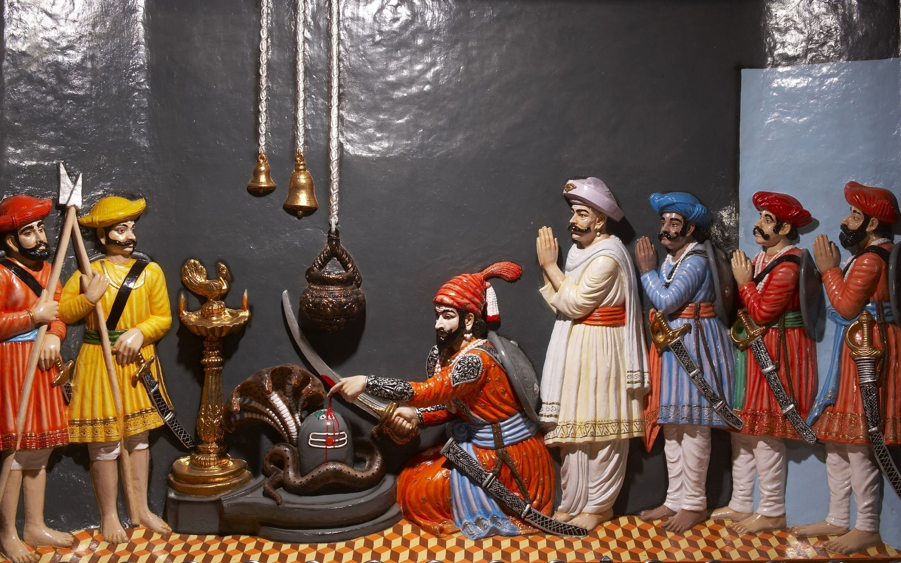

छत्रपती शिवाजी महाराज Flag of the Maratha Empire.svg मराठा साम्राज्य अधिकारकाळ जून ६, १६७४ ते एप्रिल ३, १६८० राज्याभिषेक जून ६, १६७४ राज्यव्याप्ती पश्चिम महाराष्ट्र, कोकण, सह्याद्री डोंगररांगांपासून नागपूरपर्यंत आणि उत्तर महाराष्ट्र, खानदेशापासून दक्षिण भारतात तंजावरपर्यंत राजधानी रायगड किल्ला पूर्ण नाव शिवाजीराजे शहाजीराजे भोसले जन्म फेब्रुवारी १९, १६३० शिवनेरी किल्ला, पुणे मृत्यू एप्रिल ३, १६८० रायगड उत्तराधिकारी छत्रपती संभाजीराजे भोसले वडील शहाजीराजे भोसले आई जिजाबाई पत्नी सईबाई, सोयराबाई, पुतळाबाई, काशीबाई, सकवारबाई, लक्ष्मीबाई, सगणाबाई, गुणवंतीबाई राजघराणे भोसले राजब्रीदवाक्य 'प्रतिपच्चंद्रलेखेव वर्धिष्णुर्विश्ववंदिता शाहसुनोः शिवस्यैषा मुद्रा भद्राय राजते।' चलन होन, शिवराई, (सुवर्ण होन, रुप्य होन)

शिवनेरी किल्ला: शिवाजी महाराजांचे जन्मस्थान पुणे जिल्ह्यातील जुन्नर शहरानजीक वसलेल्या शिवनेरी या डोंगरी किल्ल्यावर १९ फेब्रुवारी इ.स. १६३० मध्ये छत्रपती शिवाजी महाराजांचा जन्म झाला.[८] इतिहासाच्या अभ्यासकांमध्ये छत्रपती शिवाजी महाराजांची नेमकी जन्मतारीख हा मतभेदांचा मुद्दा आहे. महाराष्ट्र राज्य शासनाने फाल्गुन वद्य तृतीया शके १५५१ (शुक्रवार, १९ फेब्रुवारी १६३०) ही शिवरायांची जन्मतारीख २००१ साली स्वीकारली.[९] इतर संभाव्य तारखांमध्ये ६ एप्रिल १६२७ (वैशाख शुद्ध तृतीया) ही एक जन्मतारीख मानली जात होती.[१०] महाराष्ट्र शासनाने शिवाजी महाराजांच्या जन्माच्या ( शिवाजी जयंती ) स्मरणार्थ १९ फेब्रुवारी हा दिवस सुट्टी म्हणून सूचीबद्ध केला आहे. [a] [१७] [१८] शिवाजी महाराजांचे नाव शिवाई या देवतेवरून ठेवण्यात आले. [१९] [२०]एका आख्यायिकेनुसार शिवनेरी गडावरील शिवाई देवीला जिजाबाईंनी आपल्याला बलवान पुत्र व्हावा अशी प्रार्थना केली होती म्हणून या मुलाचे नाव 'शिवाजी' ठेवले गेले.[२१] शिवरायांचे वडील शहाजीराजे भोंसले हे मराठा सेनापती होते, ज्यांनी दख्खनच्या सल्तनतची सेवा केली होती. [२२] त्यांच्या आई जिजाबाई होत्या, ज्या सिंदखेडच्या लखुजी जाधवरावांच्या कन्या होत्या. जाधव हे देवगिरीच्या यादव राजघराण्यातील वंशाचा दावा करणारे मुघल-संलग्न सरदार होते. [२३] [२४] शिवाजी महाराजांच्या जन्माच्या वेळी दख्खनमधील राजसत्ता विजापूर, अहमदनगर आणि गोवळकोंडा या तीन इस्लामी सल्तनतींमध्ये विभागलेली होती. शहाजीराजांनी आपली निष्ठा वेळोवेळी अहमदनगरची निजामशाही, विजापूरची आदिलशाही आणि मुघल यांच्यादरम्यान बदलली; पण त्यांनी पुणे ही नेहमीच आपली जहागिरी ठेवली आणि स्वतःची एक लहानशी फौज पदरी बाळगली.[२५] [२६] शिवाजी महाराज हे मराठा कुटुंबातील आणि भोसले कुळातील होते. [२७] त्यांचे आजोबा मालोजी (१५५२-१५९७) अहमदनगर सल्तनतचे एक प्रभावशाली सेनापती होते आणि त्यांना "राजा" ही उपाधी देण्यात आली होती. लष्करी खर्चासाठी त्यांना पुणे, सुपे, चाकण आणि इंदापूरचे देशमुखी हक्क देण्यात आले. त्यांना त्यांच्या कुटुंबाच्या वास्तव्यासाठी किल्ला शिवनेरी देखील देण्यात आला
राज्याभिषेक मुख्य लेख: शिवाजी महाराजांचा राज्याभिषेक शिवाजी महाराजांचा राज्याभिषेक शिवाजी महाराजांनी आपल्या अनेक मोहिमांद्वारे मोठ्या प्रमाणावर जमीन आणि संपत्ती मिळविली होती. परंतु औपचारिक पदवी नसल्यामुळे तांत्रिकदृष्ट्या ते मुघल जमीनदार किंवा विजापुरी जहागीरदाराचे पुत्र होते; ज्याला त्याच्या वास्तविक प्रदेशावर राज्य करण्यासाठी कोणताही कायदेशीर आधार नसतो. कोणत्याही राजासोबत समान दर्जाचा दावा ते करू शकत नव्हते. तसेच ज्या लोकांवर त्यांचे राज्य होते त्या लोकांकडून स्वामीनिष्ठेची वा भक्तीची खरीखुरी अपेक्षा राज्याभिषेकाशिवाय करणे चुकीचे होते. राज्याभिषेकाशिवाय त्यांच्या आज्ञांना किंवा आदेशांना अखिल रयत गांभीर्याने घेईलच असे नव्हते. राज्याभिषेक झालेला नसल्याने कोणत्याही तहावर स्वाक्षरी करणे, विधीवत मार्गाने एखाद्याला जमीन देणे व आपल्या राजकीय सत्तेच्या भविष्याची हमी देणे शक्य नव्हते आपल्या राजकीय निर्मितीला (स्वराज्याला) कायदेशीर मान्यता मिळवून देऊन तिचे अस्तित्व कायम राखण्यासाठी राज्याभिषेक आवश्यक होता.[११६] इतर मराठा नेत्यांना, ज्यांच्याशी शिवाजी राजे हे तांत्रिकदृष्ट्या समान होते, त्यांच्या आव्हानांना देखील ही राजेशाही पदवी रोखू शकत होती. [c] याबरोबरच शिवराय हे हिंदू मराठ्यांना मुस्लिम शासित प्रदेशात एक सहकारी हिंदू सार्वभौम प्रदान करू शकत होते. [११८] ऐतिहासिक कागदपत्रांवरून हेही स्पष्ट दिसते की सामाजिकदृष्ट्या भोसले घराण्याशी समान असलेल्या अनेक मराठा सरदारांमध्ये त्याकाळी मत्सराची भावना निर्माण झालेली होती. असे लोक स्वतःला शिवाजीराजांचे सेवक म्हणवून घेण्यास नकार देत होते व आपण आदिलशहाचे एकनिष्ठ सेवक आहोत असे म्हणत होते. त्यांच्या लेखी अजूनही शिवाजी भोसले हे बंडखोर आणि स्वामीद्रोही होते. त्यांचा दृष्टिकोन बदलण्यासाठीही राज्याभिषेक गरजेचा होता. औपचारिक राज्याभिषेकामुळे अशा मत्सरी सरदारांना शिवाजी भोसले हे आता छत्रपती आहेत आणि विजापूर व गोवळकोंड्याच्या शहांप्रमाणेच समान दर्जाचे राजे आहेत असा संदेश गेला असता. प्रस्तावित राज्याभिषेकाची तयारी १६७३ मध्ये सुरू झाली. तथापि, काही वादग्रस्त समस्यांमुळे राज्याभिषेकाला जवळपास एक वर्ष उशीर झाला. [११९] शिवाजीराजांच्या दरबारातील ब्राह्मणांमध्ये वाद निर्माण झाला: त्यांनी शिवरायांना राजा म्हणून राज्याभिषेक करण्यास नकार दिला कारण हा दर्जा हिंदू समाजातील क्षत्रिय (योद्धा) वर्णांसाठी राखीव होता. [१२०] शिवराय हे शेती करणाऱ्या गावांच्या प्रमुखांच्या वंशातून आले होते आणि त्यानुसार ब्राह्मणांनी त्यांना शूद्र (शेती करणारा) वर्णाचे म्हणून वर्गीकृत केले. [३९] [१२१] त्यांनी नमूद केले की शिवरायांनी पवित्र धाग्याचा समारंभ कधीच केला नव्हता आणि जो धागा क्षत्रिय घालतात, तो कधीच घातला नव्हता. [३९] प्राचीन हिंदू शास्त्राप्रमाणे केवळ क्षत्रिय वर्णातील व्यक्तीसच राजा म्हणून अभिषिक्त केले जाऊ शकत होते आणि अशी व्यक्तीच हिंदू रयतेचा राजा असल्याचा दावा करू शकत होती.[१२२] शिवाजी महाराजांचे भोसले कूळ हे क्षत्रिय म्हणून गणले जात नव्हते, तसेच ते ब्राह्मणही नव्हते. अर्थातच या शास्त्रांनुसार भोसले कूळ शूद्र होते आणि अशा कुळातील व्यक्तीस राजा होण्याचा अधिकार नव्हता.[१२२] शिवाजी भोसले यांचा राज्याभिषेक अधिकृतपणे त्यांना 'क्षत्रिय' जाहीर करून झाला तरच भारताच्या सर्व भागातील ब्राह्मण उपस्थित राहून त्यांना आशीर्वाद देतील अशी परिस्थिती निर्माण झाली.[१२२] शूद्रकुलोत्पन्न म्हणून राज्याभिषेकासाठी आक्षेप घेणाऱ्यांची तोंडे बंद करू शकेल अशा पंडिताची म्हणूनच त्यावेळी स्वराज्यास गरज होती. विश्वेश्वर नामक पंडिताच्या रूपात ही गरज पूर्ण झाली. या पंडिताचे टोपणनाव 'गागाभट्ट' असे होते[१२३] आणि ते तत्कालीन ब्रह्मदेव वा व्यास म्हणून काशीक्षेत्री प्रसिद्ध होते.[१२३] त्यांनी सांगितले की त्यांना शिवाजीराजे हे सिसोदियांचे वंशज असल्याचे सिद्ध करणारी वंशावली सापडली आहे आणि अशा प्रकारे खरोखरच ते एक क्षत्रिय आहेत, परंतु त्यांच्या पदासाठी योग्य समारंभांची गरज होती. [१२४] हा दर्जा लागू करण्यासाठी, शिवाजी महाराजांचा एक पवित्र धागा समारंभ करण्यात आला आणि क्षत्रियाकडून अपेक्षित वैदिक विधींनुसार त्यांच्या जोडीदाराशी पुनर्विवाह केला गेला. [१२५] [१२६] सुरुवातीस काही आढेवेढे घेतल्यानंतर पंडित गागाभट्ट शिवाजी भोसले यांना क्षत्रिय मानण्यास तयार झाले. उदयपूरच्या क्षत्रिय घराण्याशी भोसले कुळाचा संबंध होता हे सिद्ध करण्यात बाळाजी आवजी आणि अन्य काही साथीदारांचा पुढाकार होता. अशा भक्कम पुराव्यानंतर गागाभट्ट महाराष्ट्रात येऊन शिवाजी भोसले यांच्या राज्याभिषेकाचे प्रमुख पुरोहित म्हणून जबाबदारी स्वीकारण्यास तयार झाले. अर्थात त्यासाठी त्यांनी मोठी दक्षिणाही घेतली. शिवराय आणि त्यांच्या साथीदारांनी साताऱ्यापासून अनेक मैल चालत जाऊन गागाभट्ट यांचे जंगी स्वागत केले.[१२७] २८ मे रोजी, शिवरायांनी आपल्या पूर्वजांच्या आणि स्वतःच्या क्षत्रिय संस्कारांचे इतके दिवस पालन न झाल्यामुळे तपश्चर्या केली. मग त्यांना गागा भट्ट यांनी पवित्र धाग्याने गुंतवले. [१९] इतर ब्राह्मणांच्या आग्रहास्तव, गागा भट्ट यांनी वैदिक मंत्र सोडला आणि शिवाजीराजांना ब्राह्मणांच्या बरोबरीने ठेवण्याऐवजी दोनदा जन्मलेल्या जीवनाच्या सुधारित स्वरूपात दीक्षा दिली. दुसऱ्या दिवशी, शिवरायांनी स्वतःच्या हयातीत जाणूनबुजून किंवा अपघाताने केलेल्या पापांचे प्रायश्चित केले. [१९] सोने, चांदी आणि तलम तागाचे कापड, कापूर, मीठ, साखर इत्यादी सात धातूंसह त्यांचे स्वतंत्रपणे वजन केले गेले. या सर्व धातू व वस्तूंसह एक लाख हूण ब्राह्मणांमध्ये वाटण्यात आले. पण यातूनही ब्राह्मणांचा लोभ भागला नाही. दोन विद्वान ब्राह्मणांनी निदर्शनास आणून दिले की, शिवाजीराजांनी छापे टाकताना, ब्राह्मण, गायी, स्त्रिया आणि मुले यांचा मृत्यू झाला, तसेच शहरे जाळली होती आणि त्यांना या पापातून ८,००० रुपये किंमत देऊन शुद्ध केले जाऊ शकते आणि शिवाजी महाराजांनी ही रक्कम दिली. [१२८] संमेलनाचे भोजन, सामान्य भिक्षा, सिंहासन आणि दागिने यासाठी केलेला एकूण खर्च १.५ दशलक्ष रुपयांपर्यंत पोहोचला. [१२९] ६ जून १६७४ रोजी रायगड किल्ल्यावर एका भव्य समारंभात शिवाजी महाराजांचा मराठा साम्राज्याचे (हिंदवी स्वराज्याचे) राजे म्हणून राज्याभिषेक झाला. [१३०] [१३१] हिंदू कॅलेंडरमध्ये तो दिवस १५९६ मध्ये ज्येष्ठ महिन्याच्या पहिल्या पंधरवड्याच्या १३ व्या दिवशी (त्रयोदशी ) होता. [१३२] गागा भट्ट यांनी यमुना, सिंधू, गंगा, गोदावरी, नर्मदा, कृष्णा आणि कावेरी या सात पवित्र नद्यांच्या पाण्याने भरलेल्या सोन्याच्या पात्रातून शिवाजीराजांच्या डोक्यावर पाणी ओतले आणि वैदिक राज्याभिषेक मंत्रांचा उच्चार केला. प्रसवल्यानंतर शिवाजीराजांनी आई जिजाबाईंना नतमस्तक करून त्यांच्या चरणांना स्पर्श केला. सोहळ्यासाठी रायगडावर जवळपास पन्नास हजार लोक जमले होते. [१९] [१३३] शिवाजी महाराजांना शककर्ता ("युगाचा संस्थापक") [७०] आणि छत्रपती ("सार्वभौम") असे नाव देण्यात आले. त्यांनी हैंदव धर्मोद्धारक (हिंदू धर्माचे रक्षक) ही पदवी देखील घेतली. राज्याभिषेकाच्या दिवसापासून शिवाजीराजांनी शिवराज्याभिषेक शक सुरू केला आणि शिवराई हे चलन जारी केले. या शिवाय नवी कालगणना सुरू होऊन नवा शक सुरू झाला, फारसी-संस्कृत शब्दकोश बनवला गेला. यामध्ये फारसीच्या जागी संस्कृत शब्द वापरणे यासाठी हुकुम जारी केले.[ संदर्भ हवा ] तसेच पंचांगशुद्धी करण्याची सक्ती केली. यासाठी कृष्ण दैवज्ञ नामक ज्योतिषी आणवला. या ज्योतिष्याने ग्रंथ लेखन करावे आणि संबंधितांना रित घालून द्यावी असा आदेश दिला. तसेच त्याज कसडून 'करणकौस्तुभ' नामक ग्रंथही लिहवून घेतला.[ संदर्भ हवा ]